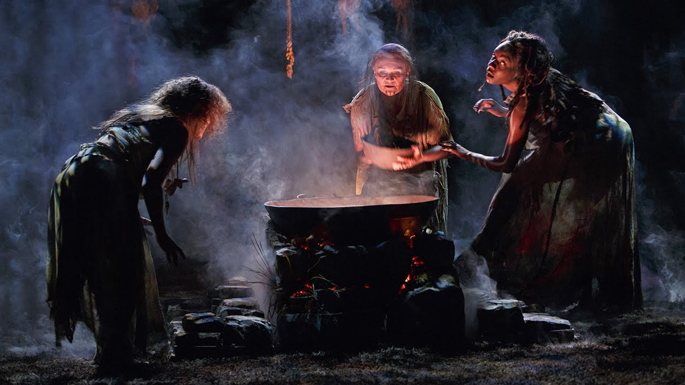

Witches' Brew

Description
The classic witches' brew from Macbeth. Perfect for fits of paranoia and distrust of everyone around you. It's so good, the forest will come calling.
Ingredients
- Fillet of a fenny snake
- Eye of newt
- Toe of frog
- Wool of bat
- Tongue of dog
- Adder's fork
- Blind-worm's sting
- Lizard's leg
- Owlet's wing
Steps
- Boil and bake the snake fillet in a very large cauldron.
- Add to bone broth and boil some more.
- Keep right on boiling until the broth is bubbling all the way to hell.
- Add salt and pepper to taste for a charm of powerful trouble.